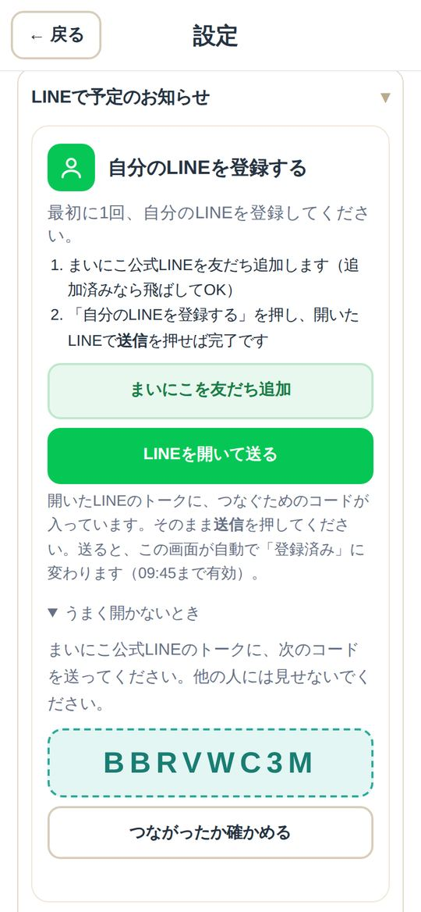
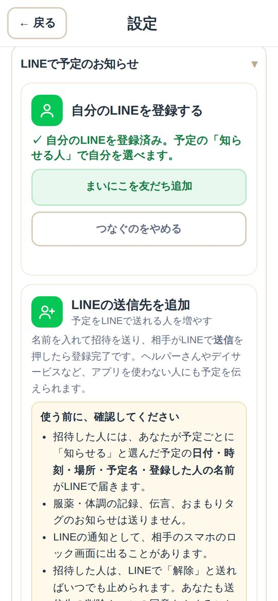
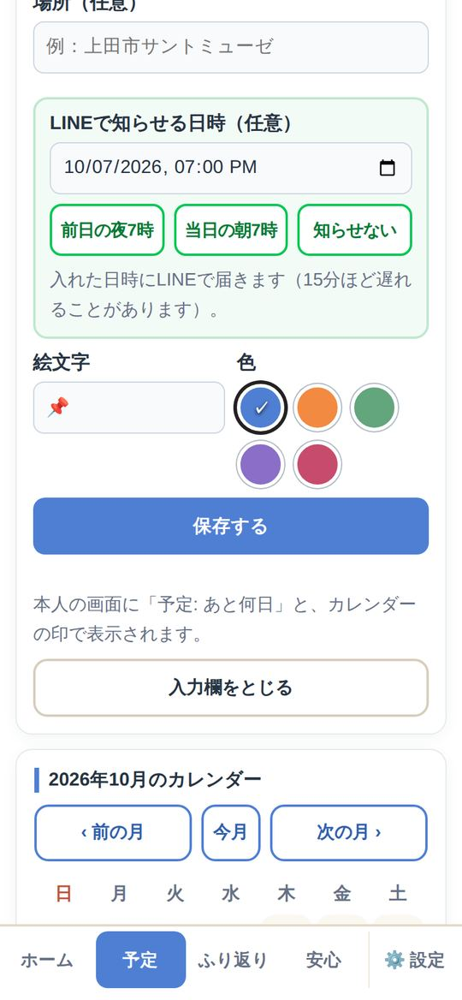
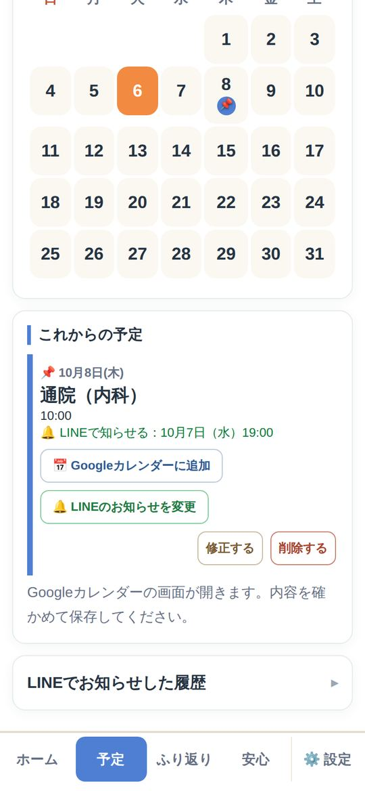
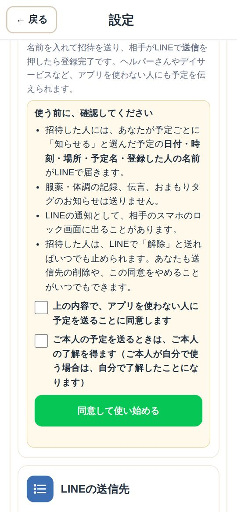

LINEで予定のお知らせ
予定を、
LINEでも受け取る。
通院やデイサービスの日を、決めた時間にLINEでお知らせします。
- 📱LINEに
届く - ⏰時間を
選べる - 👥ヘルパーさん
にも
LINEの中では印刷できないことがあります。右上の「…」などから「ブラウザで開く」を選んで、もう一度押してください。
1
自分のLINEをつなぐはじめに1回
1分ほどで終わります。受け取る人が、自分のスマホで行います。
1「LINEで予定のお知らせ」を開く
「⚙️ 設定」→ LINEで予定のお知らせ を開きます。
はじめての人は、まいにこを友だち追加 を押します（追加済みなら飛ばしてOK）。

2「自分のLINEを登録する」を押す
自分のLINEを登録する → LINEを開いて送る を押すと、LINEのトークにコードが入った状態で開きます。
ポイント うまく開かないときは「うまく開かないとき」に出る8文字のコードを、まいにこのトークに送ってください（10分間・1回だけ）。

3LINEで「送信」を押す
そのまま送信を押すと、「連携しました」と返事が届きます。
BBRVWC3M
りえさん、LINE連携しました。
まいにこで「LINEで知らせる日時」を入れた予定が、このLINEに届きます。
4「登録済み」になれば完了
まいにこの画面が自動で 「✓ 自分のLINEを登録済み」 に変わります。
ポイント 登録は1人ずつ、それぞれのスマホで行います。

2
予定に「知らせる時間」を入れる
時間を入れた予定だけが、LINEで届きます。
1予定に「LINEで知らせる日時」を入れる
「予定」で予定を入れるとき、LINEで知らせる日時 を選びます。前日の夜7時 当日の朝7時 を押すだけでも入ります。
ポイント 同じ時刻の予定は、1人に1通にまとめて届きます。

2予定の下に「🔔 LINEで知らせる」が出る
保存すると、予定の下に「🔔 LINEで知らせる：10月7日（水）19:00」のように出ます。変えるときは LINEのお知らせを変更。

3その時間に、LINEで届く
決めた時間に、まいにこ公式LINEから届きます。リンクを押すと、その予定を開けます。
ポイント 15分ほど遅れることがあります。お薬・体調・伝言は送りません。
📅 予定のお知らせ（まいにこ）
10月8日（木）10:00
📌 通院（内科）
（登録：りえ）
カレンダーでこの予定を確認する
3
ほかの人にも送る・やめる
1ヘルパーさんなど、アプリを使わない人にも送る
設定の LINEの送信先を追加 で、名前を入れて招待を作ります。相手が招待の文をLINEで送ると、送信先になります。
安心 送るのは、予定ごとに「知らせる」と選んだ予定だけです。ご本人の了解をとってから使ってください。

2やめるとき
まいにこのトークで 「解除」 と送るか、設定の「LINEで予定のお知らせ」で解除します。ブロックしても止まります。
⚠️ 注意してほしいこと
- お知らせは、遅れたり届かなかったりすることがあります。大事な予定は、電話などでも確かめてください。
- 試験運用中のため、LINEのお知らせはまいにこ全体で月200通までです。
- 届かないときは困ったときを見てください。